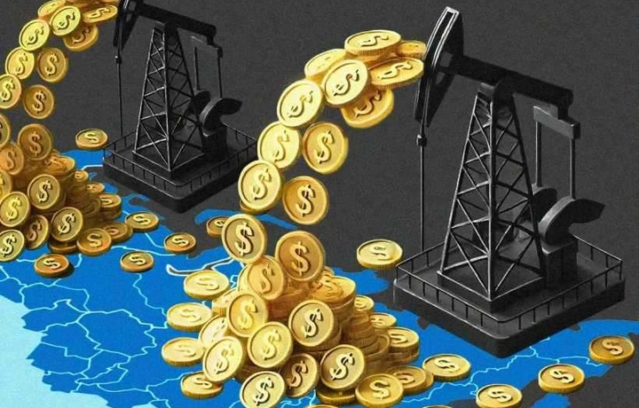

Tabiatdan oladigan barcha resurslar haqida ma'lumot
Germaniyaning Statista kompaniyasi ma’lumotlariga ko‘ra, tabiiy zaxiralari qiymati bo‘yicha eng boy mamlakat — Rossiya. Mamlakatning tabiiy boyliklari 75 trln dollarga baholangan.
Rossiya tabiiy boyliklarining asosini ko‘mir, tabiiy gaz, neft, yog‘och va kamyob unsurlar tashkil etadi.

Shavkat Mirziyoyev: Janubiy Koreyada tabiiy boyliklar yo‘q, lekin iqtisod bo‘yicha kuchli o‘nlikka kiradi
Olmaliq shahriga tashrif buyurgan davlat rahbari Shavkat Mirziyoyev hududdagi konlardan oqilona foydalanish, bu orqali xalq farovonligini oshirish zarurligi haqida to‘xtaldi.